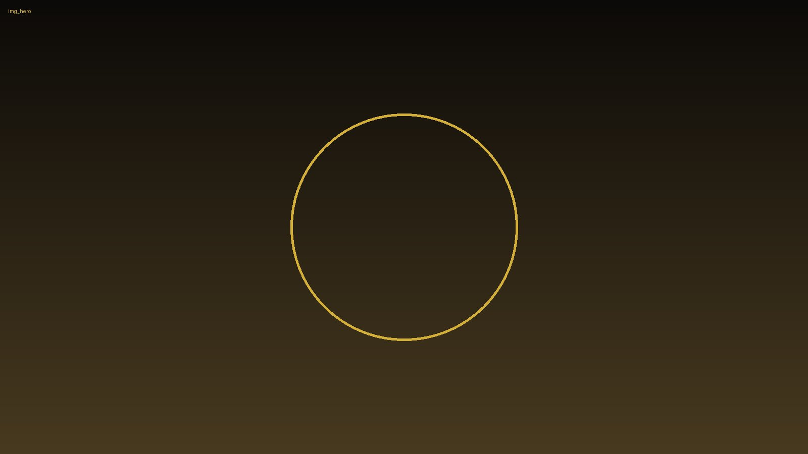
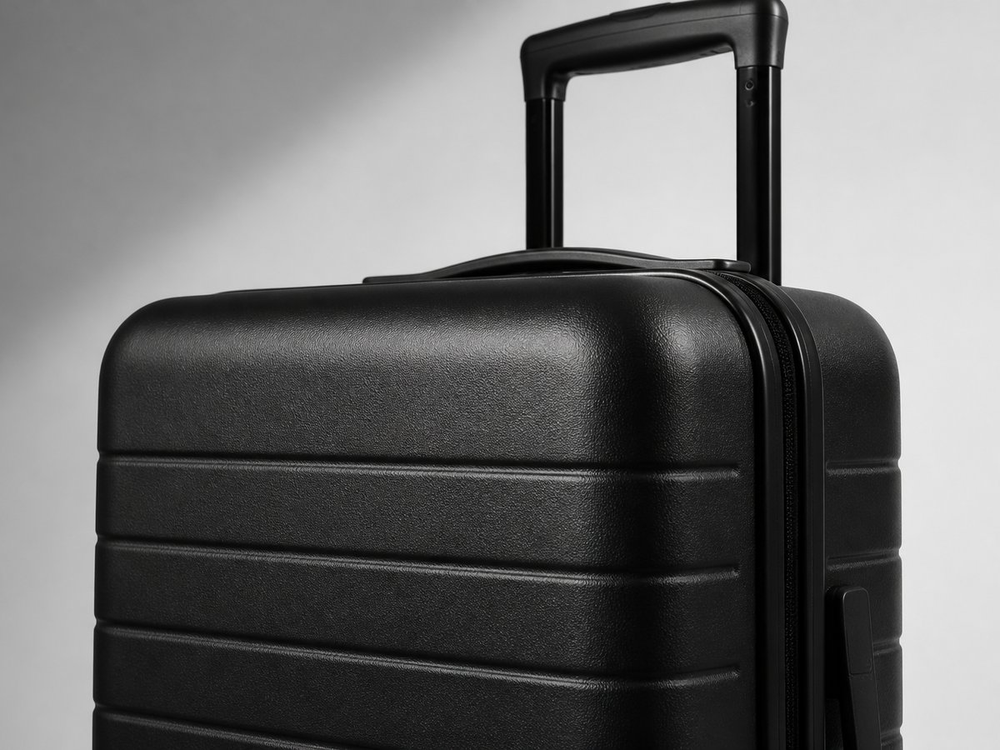
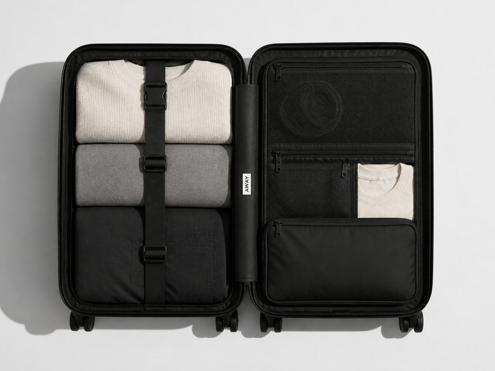
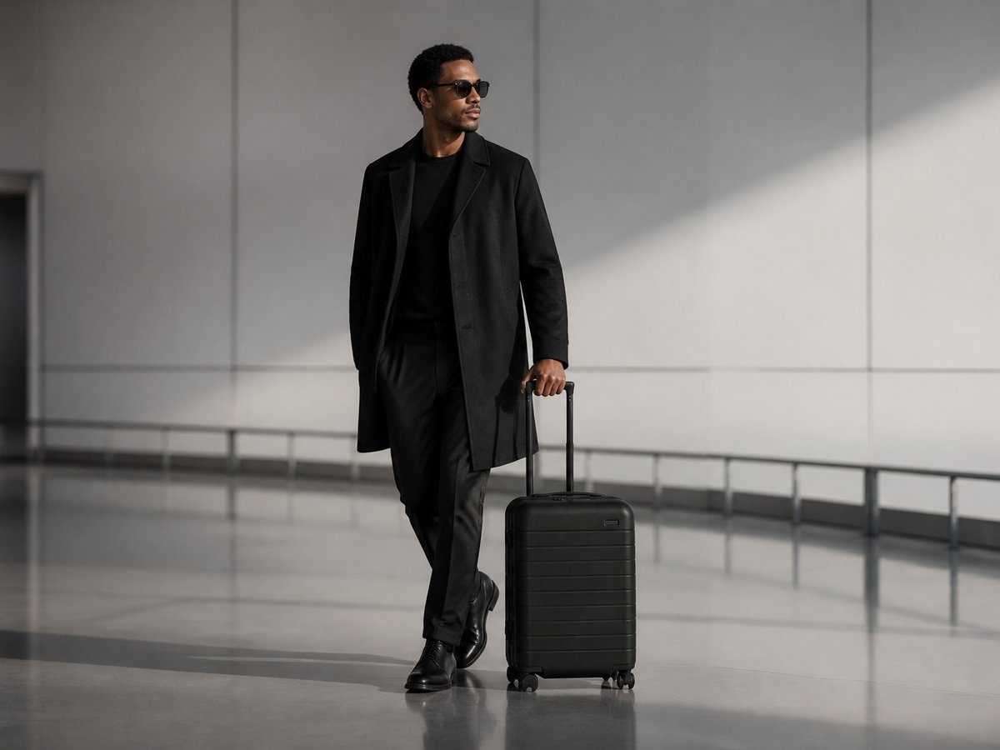
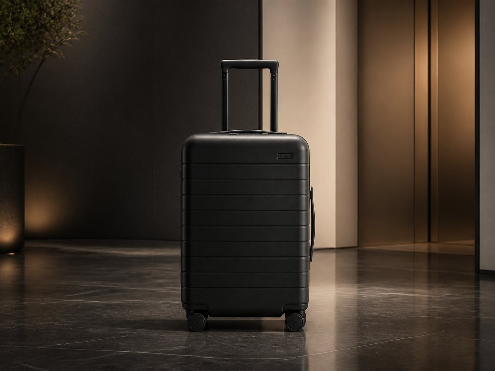

Na palubu se počítá každý detail.
Kabinový kufr bez rušivých prvků
Minimalistický kabinový kufr pro moderní cesty.
Away The Carry-On je kabinový kufr pro lidi, kteří chtějí cestovat čistě, rychle a bez vizuálního balastu. Jeho skořepina ze 100% polykarbonátu, lehká a odolná, drží moderní matnou siluetu a vypadá stejně dobře v coworkingu jako v odletové hale. Vnější rozměry 55×36,5×23 cm, hmotnost 3,4 kg, objem 41 litrů. Cena 6 490 Kč.
Vnější rozměry 55×36,5×23 cm, hmotnost 3,4 kg, objem 41 litrů. Cena 6 490 Kč.


Čistý vzhled. Pevná skořepina.
Minimalismus tu není jen styl, ale způsob, jak navrhnout každou cestu. Tento kufr staví na čisté jednobarevnosti, matném povrchu a přesných proporcích, takže nepoutá pozornost víc, než je nutné — jen dává prostoru, aby působil klidněji. Jeho skořepina ze 100% polykarbonátu, lehká a odolná, pomáhá udržet tvar i při častém přesouvání.
Parametry, které sedí na palubu
Na palubu se počítá každý detail. Vnější rozměry 55×36,5×23 cm, hmotnost 3,4 kg, objem 41 litrů. Čtyři otočná kolečka 360° usnadní pohyb mezi terminálem, výtahem i chodníkem a kombinační zámek schválený TSA přidá jistotu při kontrole i během přestupů.
Vnější rozměry
55×36,5×23 cm
Hmotnost
3,4 kg
Objem
41 litrů
Kolečka
Čtyři otočná kolečka 360°
Zámek
Kombinační zámek schválený TSA
Materiál
Skořepina ze 100% polykarbonátu
Uvnitř je stejně promyšlený jako zvenku
Vnitřní kompresní systém s dvojitým popruhem pomáhá udržet oblečení sevřené, přehledné a připravené na další zastávku — bez zbytečného přebalování a bez chaosu po otevření. Díky tomu je balení rychlejší, čistší a výrazně méně stresující.


Pohybuje se tiše a jistě
Pro moderní cestovatele a městské profesionály je důležitá i každodenní použitelnost. Away The Carry-On působí kompaktně, pohybuje se tiše a díky své čisté formě zapadne ke kabátu, obleku i ležérnímu travel outfitu. Je to chytré řešení, které nechává prostor vašemu stylu.
Jistota na roky
U prémiového kufru nejde jen o první dojem, ale o roky používání. Away proto doplňuje design o doživotní záruka, aby byl Carry-On stejně jistý na prvním výletě jako po desítkách dalších. Výsledek je odolný, klidný a připravený na časté cestování.

Připraven na další odlet?
Jestli hledáte minimalistický, odolný a praktický kabinový kufr, tenhle je připravený na odlet. Objednejte si Away The Carry-On za 6 490 Kč a získejte kufr, který spojuje čistý design, chytré řešení a jistotu na každý přesun.